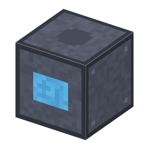

説明
①子ども 直流の電気を、半導体のスイッチで細かく切りかえて交流にする装置。
②学生 後ろの面＝直流の入力、前の面＝交流の出力（電圧の段は変えない）。効率 95%。太陽電池や電池の直流を、変圧器や交流の網につなげる。⚠️ 前と後ろは別のケーブルの網にする（同じ網にすると網全部が交流になり、直流の機械が止まる）。
③大人 スイッチを1秒に何百〜何千回もオン・オフして向きを入れかえ、交流の形にする（整流器の逆）。交流の周波数を変えると、交流モーターの回る速さが変わる。
④ガチ 最初はサイリスタで作られ、1980年代からはパワー MOSFET・IGBT になった ⚠️（年は出典で確かめ中）。電気自動車・エアコン・電車は、電気を1秒に何千回も切りかえてモーターを回している。
作り方
使い道
（このアイテムを使うレシピは無い）